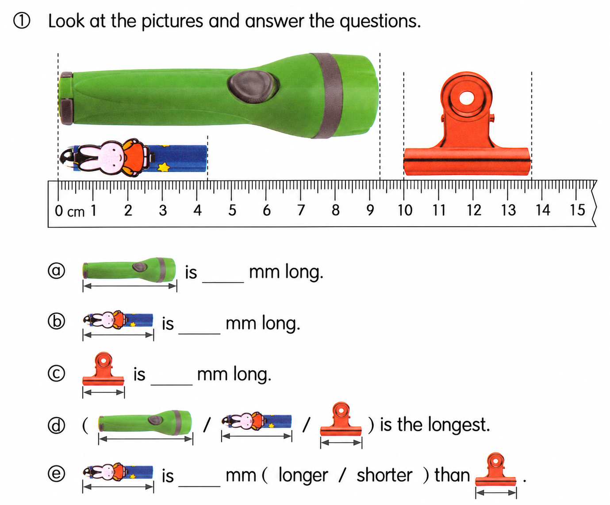
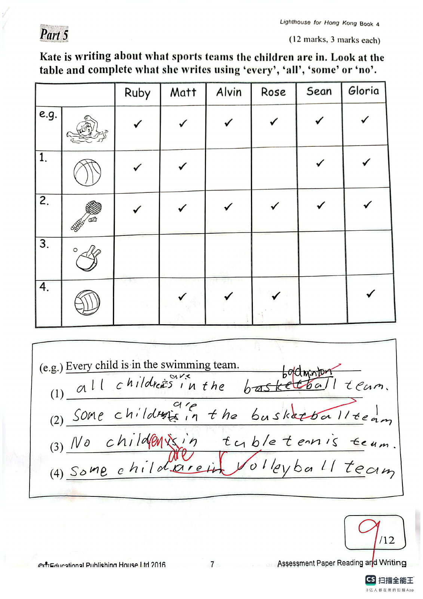
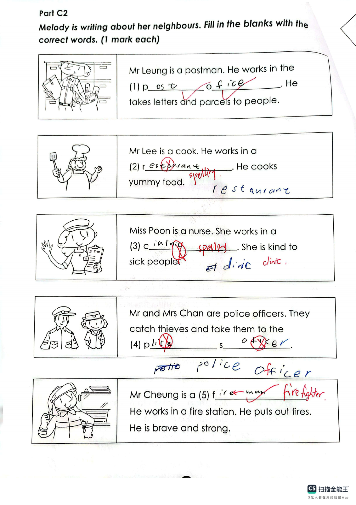
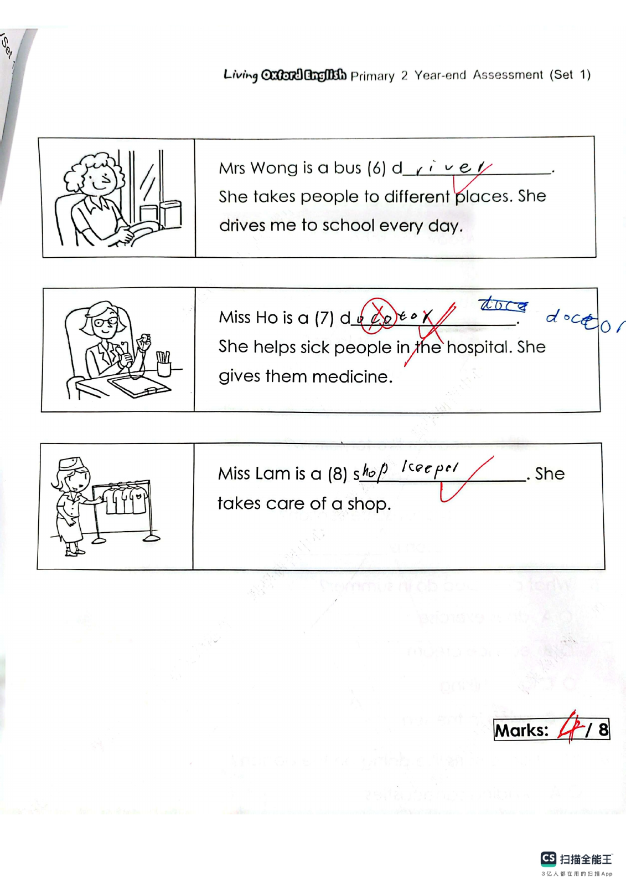

Answer: (a) 93 mm; (b) 43 mm; (c) 37 mm; (d) the torch (first picture); (e) 6 mm, longer
已掌握
| # | 单词/词组 | 中文意思 | 例句/说明 | 已掌握 |
|---|---|---|---|---|
| noun 名词 | ||||
| 1 | cream | 奶油 | I like cream on my cake. | |
| 2 | model | 模型 | I build a car model. | |
| 3 | robot | 机器人 | The robot can move. | |
| 4 | music | 音乐 | We listen to music after school. | |
| 5 | twin | 双胞胎 | My brother and I are twins. | |
| 6 | river | 河流 | The river flows through the town. | |
| 7 | chef | 厨师 | The chef cooks dinner. | |
| 8 | sea | 大海 | We swam in the sea. | |
| 9 | diary | 日记 | I write in my diary every evening. | |
| verb 动词 | ||||
| 10 | touch | 触摸 | Do not touch the hot cup. | |
| 11 | put away | 收拾、收纳 | Please put away your toys. | |
| 12 | wake up | 醒来 | I wake up at seven every morning. | |
| 13 | receive | 收到 | I receive a letter from my aunt every month. | |
| 14 | hide | 隐藏 | The children hide behind the tree. | |
| 15 | believe | 相信 | I believe you are telling the truth. | |
| preposition 介词 | ||||
| 16 | above | 在……之上 | The clock is above the board. | |
| noun phrase 名词短语 | ||||
| 17 | police station | 警局 | We took the lost bag to the police station. | |
| adjective 形容词 | ||||
| 18 | wet | 湿润的；湿的 | My shoes are wet from the rain. | |
| modal verb 情态动词 | ||||
| 19 | mustn't | 禁止；不准 | You mustn't run in the classroom. | |
| adverb 副词 | ||||
| 20 | often | 经常 | We often play in the park. | |
| # | 单词/词组 | 中文意思 | 例句/说明 | 已掌握 |
|---|---|---|---|---|
| adjective 形容词 | ||||
| 1 | plain | 素色的；无图案的 | I wore a plain T-shirt with no picture on it. | |
| 2 | surprised | 惊讶的 | My parents were surprised. | |
| noun 名词 | ||||
| 3 | axe | 斧头 | The man has an axe. | |
| 4 | shell | 壳子 | The shell is hard. | |
| 5 | mistake | 错误 | I made a mistake. | |
| 6 | interviewer | 采访者；面试官 | The interviewer asks questions. | |
| 7 | venue | 地点 | The venue is near our school. | |
| 8 | event | 事件 | This event is fun. | |
| 9 | adjectives | 形容词 | Adjectives describe nouns. | |
| 10 | knowledge | 知识 | Books give us knowledge. | |
| 11 | adult | 成年人 | Ask an adult to help you cross the road. | |
| 12 | sale | 大减价，促销 | The shop is having a summer sale. | |
| 13 | header | 邮件信头 | The email header shows the sender's address. | |
| 14 | menu | 菜单 | Look at the menu. It is teatime. | |
| 15 | instrument | 乐器 | Do you want to learn to play an instrument? | |
| noun phrase 名词短语 | ||||
| 16 | the school picnic | 学校野餐 | The school picnic is on 23rd November. | |
| 17 | a packet of French fries | 一包薯条 | I'd like a packet of French fries. | |
| 18 | a cup of coffee | 一杯咖啡 | I'd like a cup of coffee, please. | |
| 19 | a potato | 土豆；马铃薯 | First wash a potato and cut it open. | |
| 20 | a plate | 盘子 | Serve the sandwich on a plate. | |
| 21 | chicken wings | 鸡翅 | We bought a box of chicken wings for dinner. | |
| 22 | total price | 总价 | The total price of three apples at two dollars each is six dollars. | |
| verb 动词 | ||||
| 23 | match | 匹配 | Please match each word to the correct picture. | |
| 24 | celebrate | 庆祝 | We celebrate my birthday. | |
| 25 | protect | 保护 | It is very important for us to protect the environment. | |
| 26 | gather | 集合 | Students gather in the school hall at half past eight. | |
| verb phrase 动词短语 | ||||
| 27 | play mini golf | 打迷你高尔夫 | I like to play mini golf at the weekend. | |
| 28 | fold the clothes | 叠衣服 | We fold the clothes and put them away. | |
| 29 | turn off | 关掉（开关） | We always turn off the lights when we leave a room. | |
| question phrase 疑问短语 | ||||
| 30 | how many | 多少（用于可数名词） | How many apples are there in the basket? | |
| # | 单词/词组 | 中文意思 | 例句/说明 | 已掌握 |
|---|---|---|---|---|
| time/date 时间日期 | ||||
| 1 | May | 五月 | May is the fifth month. | |
| 2 | July | 七月 | July is the seventh month. | |
| time unit 时间单位 | ||||
| 3 | week | 周 | A week has 7 days. | |
| numbers 数字 | ||||
| 4 | three | 3 | Three is 3. | |
| 5 | five | 5 | Five is 5. | |
| 6 | seventeen | 17 | Seventeen is 17. | |
| 7 | thirty | 30 | Thirty is 30. | |
| 8 | sixty | 60 | Sixty is 60. | |
| 9 | thousand | 千 | One thousand is 1000. | |
| ordinal numbers 序数 | ||||
| 10 | second | 第二 | This is the second shape. | |
| solid shape 立体图形 | ||||
| 11 | quadrilateral prism | 四棱柱 | A quadrilateral prism has quadrilateral faces. | |
| 12 | hexagonal prism | 六棱柱 | A hexagonal prism has hexagonal faces. | |
| 13 | sphere | 球 | A sphere is round. | |
| 14 | curved face | 曲面 | A cylinder has a curved face. | |
| geometry 几何 | ||||
| 15 | right angle | 直角 | A right angle is 90 degrees. | |
| # | 单词/词组 | 中文意思 | 例句/说明 | 已掌握 |
|---|---|---|---|---|
| geometry 几何 | ||||
| 1 | perpendicular line | 垂直线 | Perpendicular lines meet at a right angle. | |
| 2 | parallel to each other | 相互平行 | The two lines are parallel to each other. | |
| question word 题目词 | ||||
| 3 | compare | 比较 | We compare two numbers. | |
| 4 | estimate | 估计 | Estimate the answer first. | |
| 5 | count | 数数 | Count from 1 to 10. | |
| place value 位值 | ||||
| 6 | 5-digit number | 五位数 | 12,345 is a 5-digit number. | |
| comparison 比较 | ||||
| 7 | fewer | 更少 | There are fewer apples in this box. | |
| 8 | most | 最多的 | Which group has the most? | |
| 9 | shortest | 最短的 | Find the shortest line. | |
| time/date 时间日期 | ||||
| 10 | hour hand | 时针 | At three o'clock, the hour hand points to 3. | |
| 11 | minute hand | 分针 | At three o'clock, the minute hand points to 12. | |
| 12 | common year | 平年 | A common year has 365 days. | |
| 13 | large division | 大格（钟面上相邻两个小时数字之间的一格） | The hour hand moves one large division in one hour. | |
| position 位置 | ||||
| 14 | above | 上面 | The clock is above the board. | |
| operations calculation 运算 | ||||
| 15 | subtract A from B | B-A | "Subtract A from B" means B - A. | |
| 16 | expression | 式子 | Write the expression in horizontal form. | |
| 17 | equally | 平等地 | Share the apples equally. | |
| 18 | remainder | 余数 | The remainder is left after division. | |
| 19 | divide A by B | A 除以 B | Divide A by B. | |
| 20 | checking | 验算 | Checking by addition shows that 9 - 4 = 5 is correct: 5 + 4 = 9. | |
| teacher math vocabulary 老师数学词汇 | ||||
| 21 | between ... and ... | 在……和……之间 | 7 is between 6 and 8. | |
| 22 | finish | 完成 | Please finish the calculation. | |
| currency money 货币 | ||||
| 23 | dollar | 元 | One dollar has 100 cents. | |
| 24 | change | 零钱 | Count the change after paying. | |
| measurement 测量 | ||||
| 25 | millimeter | 毫米 | One millimeter is one tenth of a centimeter. | |
| 26 | pointer | 指针 | The pointer on the scale shows 2 kg. | |
| 27 | width | 宽度 | The rectangle has a length of 8 cm and a width of 5 cm. | |
| position order 位置和顺序 | ||||
| 28 | following | 下面的 | Answer the following questions. | |
| geometry tool 几何工具 | ||||
| 29 | set square | 三角尺 | A set square helps us draw angles. | |
| plane shape 平面图形 | ||||
| 30 | right-angled trapezium | 直角梯形 | A right-angled trapezium has two right angles. | |



